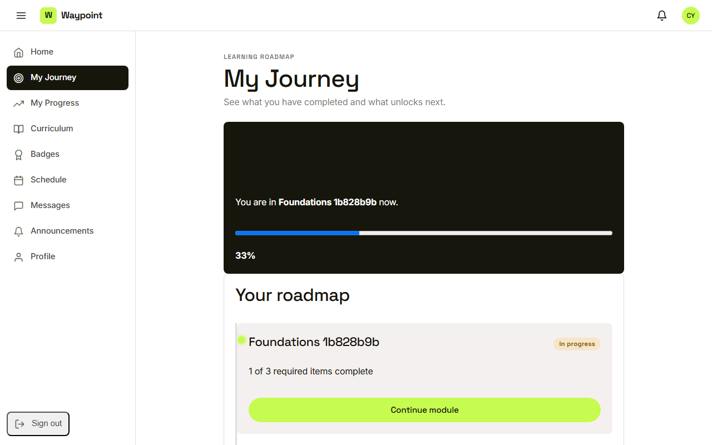
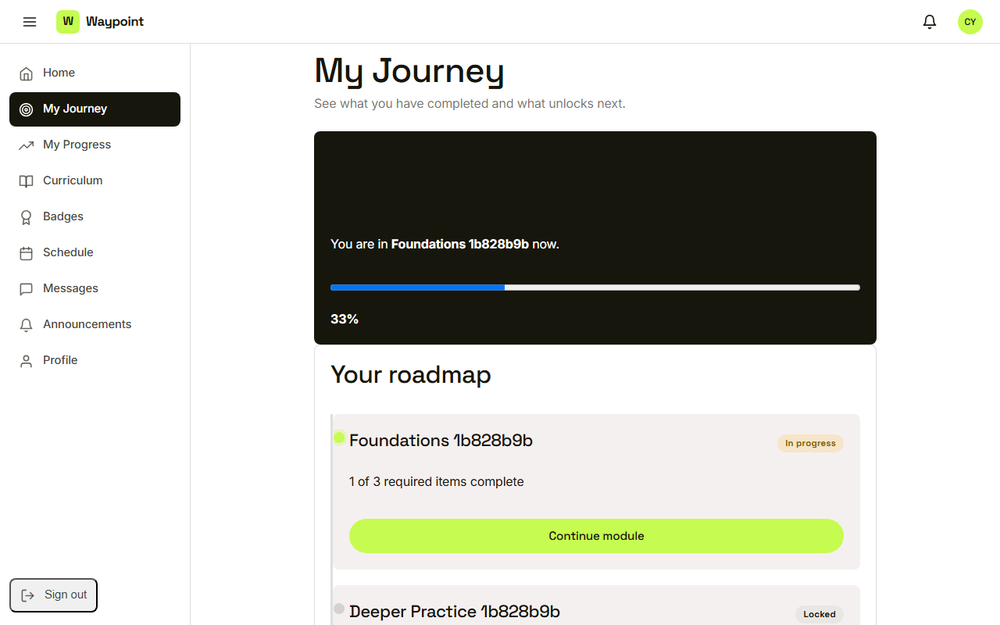
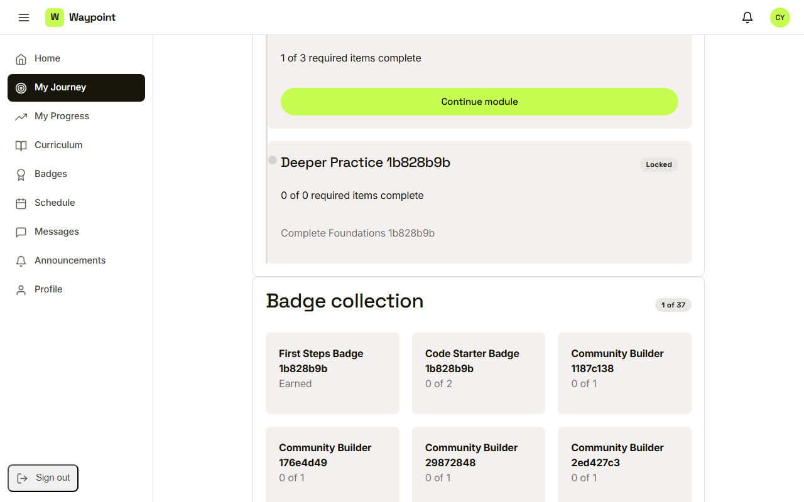

Waypoint · Video 042
The learning journey
Where you are, and what unlocks next
My Journey

You are in Foundations, now
Modules in order

In progress, with a count of required items
Locked until the one before is done

Locked, with the reason shown
Badge collection
Earned, or a counted progress
Things to remember
- Done, in progress or locked, with required-item counts
- The current module has a continue button
- Locked modules say what to finish first
- Badge counts match everywhere